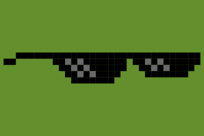

For Everyone

Penetration Testers
Pivot with a persistent Meterpreter session in Metasploit.
Scan the network using nmap.
DNS Spoof clients to phishing sites.
Exfiltrate data via SSHFS.
Man-in-the-Middle inline computers capturing browser traffic.
Systems Administrators
Access to the entire LAN through a site-to-site VPN with the LAN Turtle OpenVPN client acting as gateway.
Automate a management script with the results sent every hour by email.

Tech Enthusiasts
Write code on the openwrt-based Linux platform for any inline Ethernet application.
Maintain access to your home network from anywhere using a persistent reverse SSH shell.